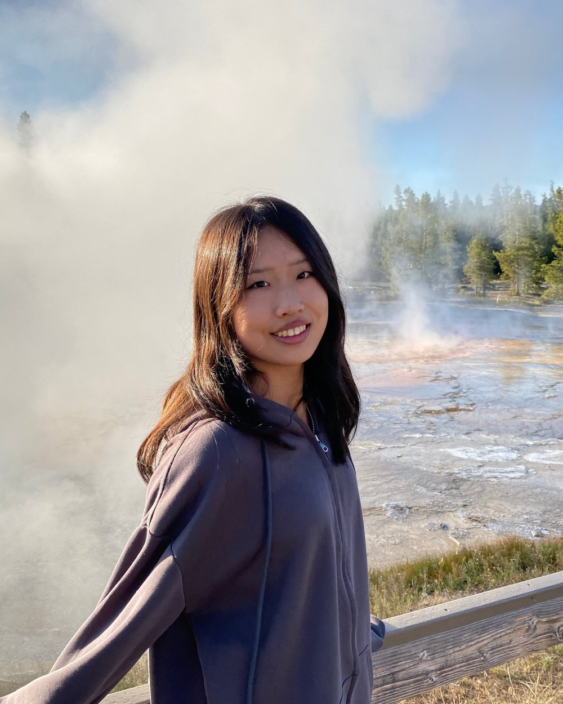
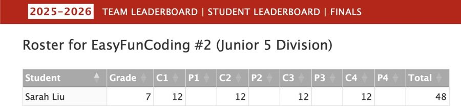
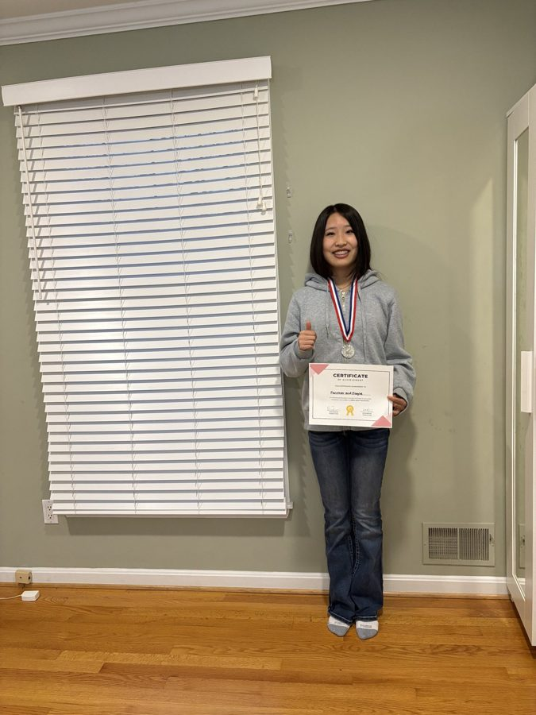
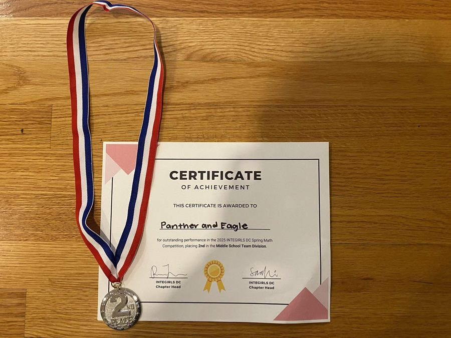
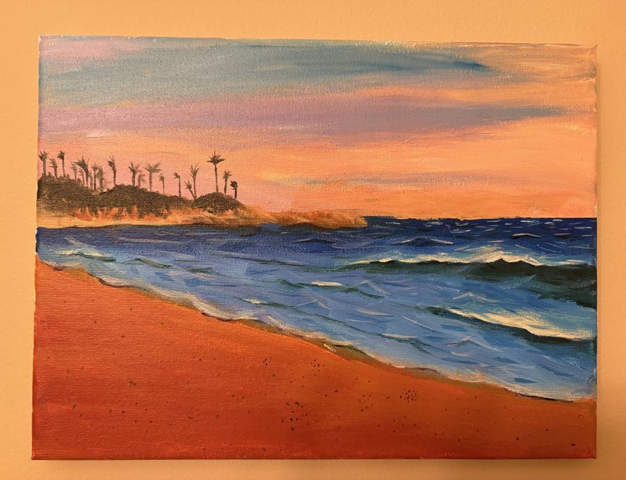
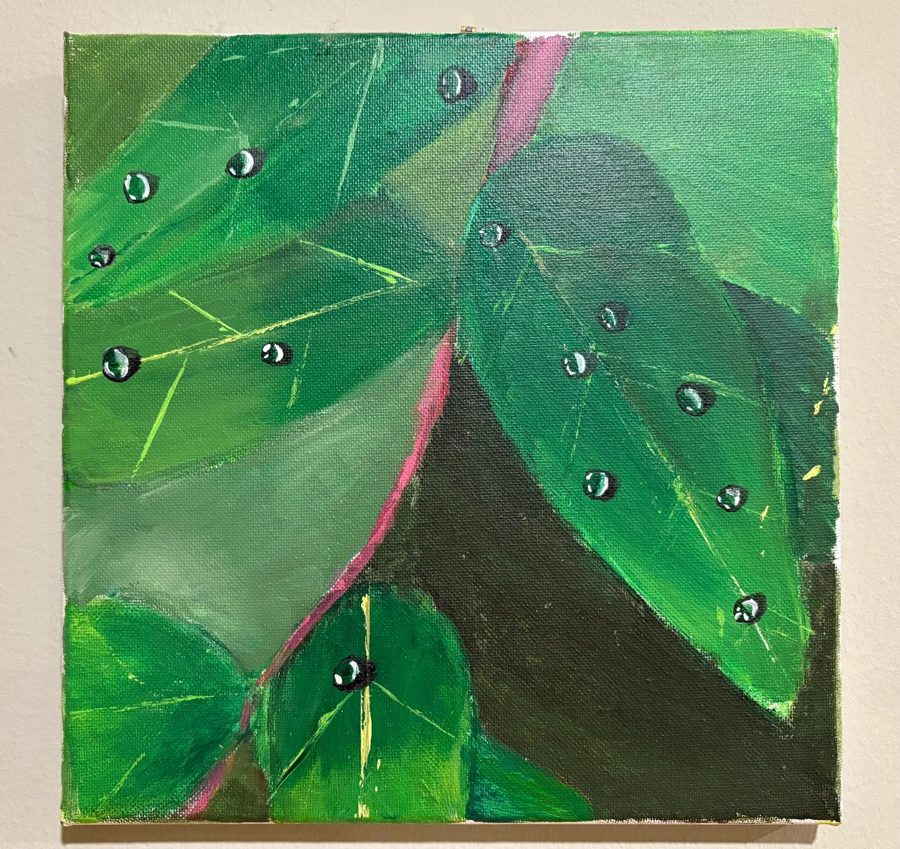
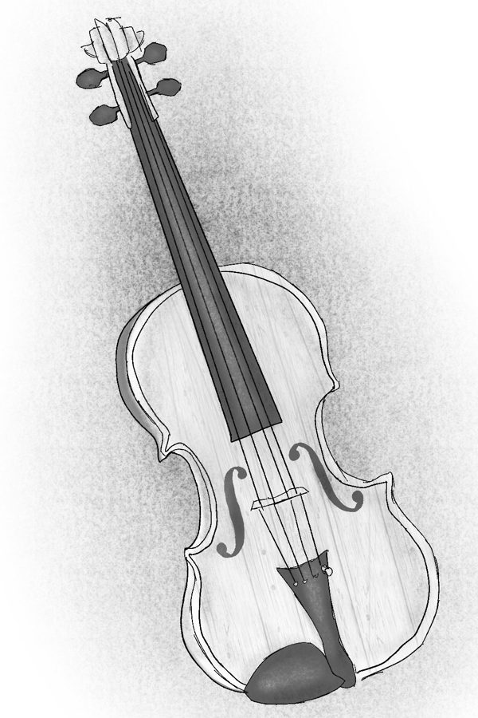
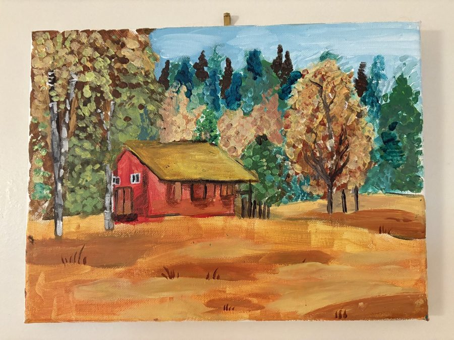
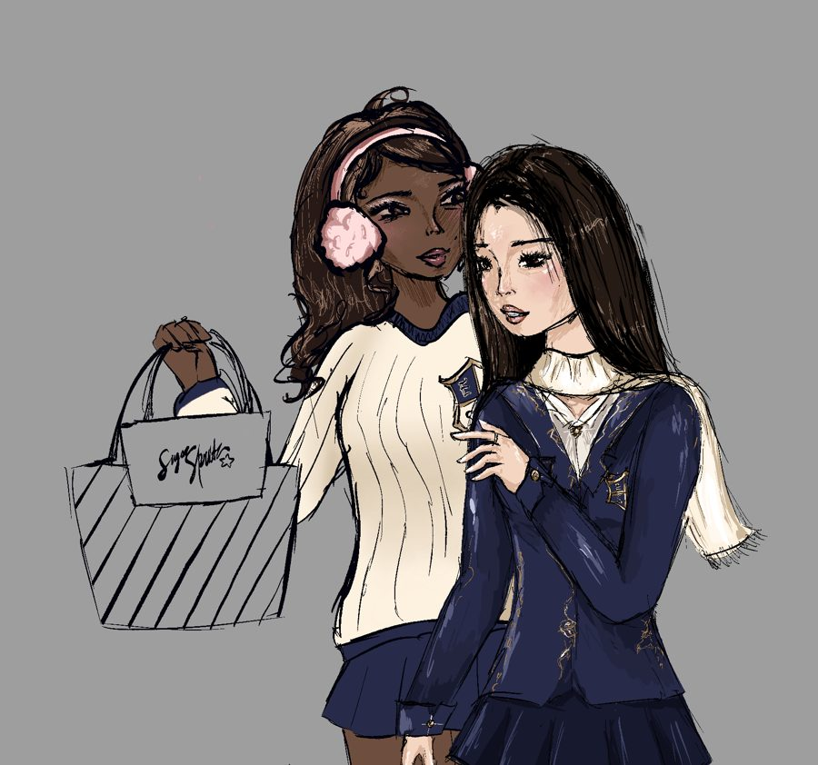

USACO Silver Division
Promoted from Bronze after scoring 818 out of 1000 in the 2026 Third Contest. All competitors who scored 700 or higher were promoted.
Hello! I’m an eighth grader in Bethesda, Maryland. I enjoy writing code and stories, playing violin, singing in a youth chorus, participating in debate, teaching myself how to advance further in art, playing tennis, and skiing in the wintertime. This website collects some of the work I’m most proud of.

Python, C++, and web design. USACO Silver and ACSL.
I wrote my first program during the COVID pandemic. I was around seven years old at the time. It was written using MIT’s Scratch, and I got hooked almost immediately. In one place, I could draw characters, design games, and learn from others. That was when I first began to truly think of going to MIT one day and building better technology for kids like me at the time to use.
Since then, my coding has evolved with me. I’ve moved from simply putting blocks together in Scratch to writing Python and C++, and I practice for the USA Computing Olympiad and the American Computer Science League. Each and every contest and practice session motivates me to learn more and to think more carefully about how to solve hard problems that challenge me.
Today, AI is about to write a lot of code independently, so a lot of people wonder whether learning to code still matters. I think that it is more important than ever. The future needs people who really get how these systems work, so they can make them even more advanced and more creative. I aspire to be one of those people.
Promoted from Bronze after scoring 818 out of 1000 in the 2026 Third Contest. All competitors who scored 700 or higher were promoted.
Perfect score in the regular season: 12 out of 12 in each of the four contests, 48 out of 48 total.

With my team at TG Academy of Innovation’s New Product Development program motivating me, I’m creating an app to help reduce negative and often unexpected drug effects. So far, I’ve researched the problem, presented it, designed a rough draft, and begun to create a prototype.
Varsity Math Team and Honors Algebra II.
I was selected for my school’s Varsity Math Team in 2024 and practice with them every week for competitions. This year I’m taking Honors Algebra II at Walt Whitman High School while I finish eighth grade.
My team, “Panther and Eagle,” placed second in the middle school team division.


Fiction, music articles, and history.
A short story of about 2,000 words. Two trainees for the military on an isolated island have been taught that the people beyond are unintelligent, until a ship without sails appears on their night watch.
“I can’t believe this!” Abram exclaimed, shivering as an icy wind blew his blond hair into his eyes. His breath bloomed in white clouds as he spoke. “We graduate tomorrow from being trainees, and we’re still stuck on the watchtower night shift!” He groaned loudly and turned his head to halfheartedly squint out at the vast expanse of ocean surrounding Carl’s Isle. As he did, spray from the saltwater stung his eyes.
“Lower your voice,” Marco muttered, glancing over his shoulder. “We swore that we would guard the island years ago.” If the higher-ups heard talk like that, it wouldn’t just be treason; rather, it would be the end of everything Marco was trying to preserve.
I’m independently developing a long-form creative writing project of about 16,000 words so far.
My National History Day website explores how the French Revolution’s Reign of Terror turned away from the ideals of liberty and fraternity that the Revolution wanted to defend. Visit my National History Day website
Middle School category, 2025, from the Montgomery County Commission for Women. The contest asked what kind of media we would create to build girls’ and women’s confidence. Read the announcement
Since 2024 I’ve published music articles that help readers build their musical skills.
I spent 2024–25 in the Humanities and Communications Magnet Program at Eastern Middle School.
Violin and chorus.
I’ve played violin ever since I was six years old, shifting to playing with Maryland Classical Youth Orchestras from 2022 to 2025 and performing with them across Maryland. Since 2023 I’ve sung with the Strathmore Youth Chorus, last year in the Concert Chorus and this year joining the Chamber Ensemble as well, with weekly rehearsals and performances at Strathmore.
School advanced team and Potomac Debate Academy.
I’ve debated since 2023, on my school’s advanced team and with Potomac Debate Academy, and I’ve competed in NCFL and University of Maryland tournaments. Debate taught me how to think well not just beforehand but also in the moment and how to speak to people confidently.
Creating artwork while independently refining my skills in the arts with practice and exploration of new things.





Sports, service, school, and languages.
I’ve played tennis since 2019, in tournaments and as a high school varsity player at Pass Academy.
| Total | 2367 | 99th percentile |
|---|---|---|
| Verbal | 800 | 99th percentile |
| Quantitative | 800 | 99th percentile |
| Reading | 767 | 98th percentile |
Each section is scored out of 800 and the total out of 2400. Percentiles compare test takers in the same grade over the past three years.
| Total | 1410 | above the 99th percentile |
|---|---|---|
| Reading and Writing | 720 | above the 99th percentile |
| Math | 690 | above the 99th percentile |
Each section is scored out of 720 and the total out of 1440. Percentiles compare 8th-grade test takers over the past three years.